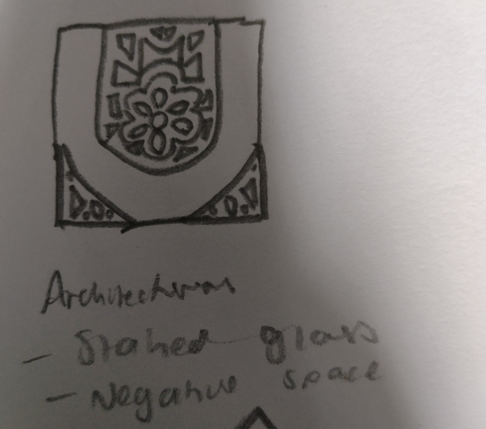
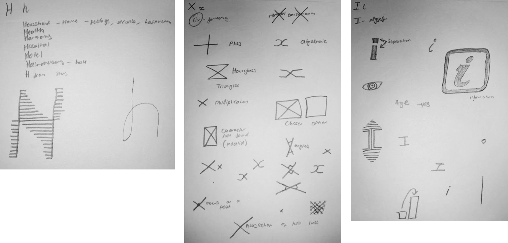
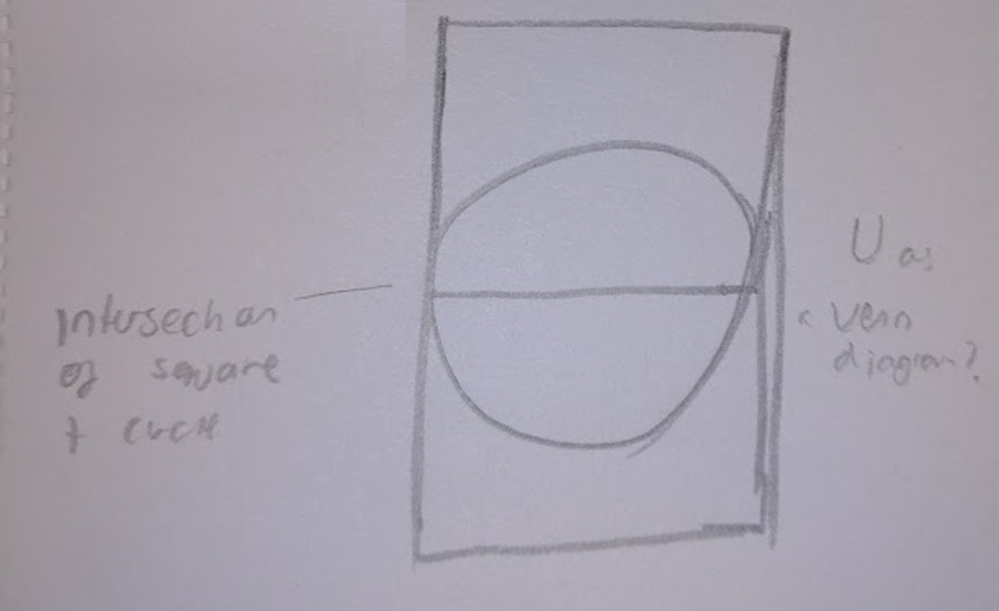
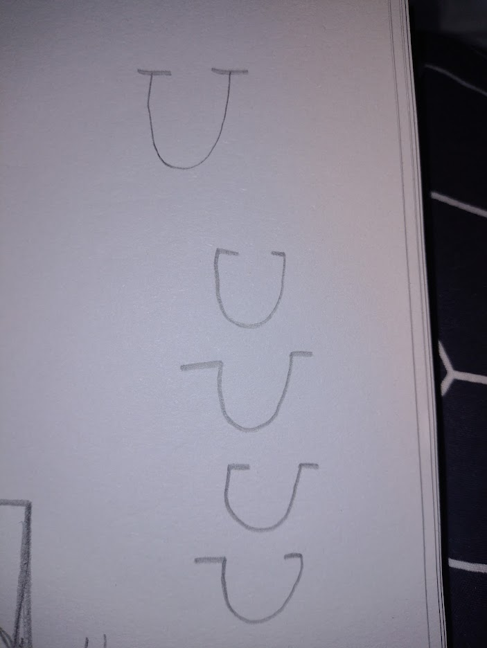
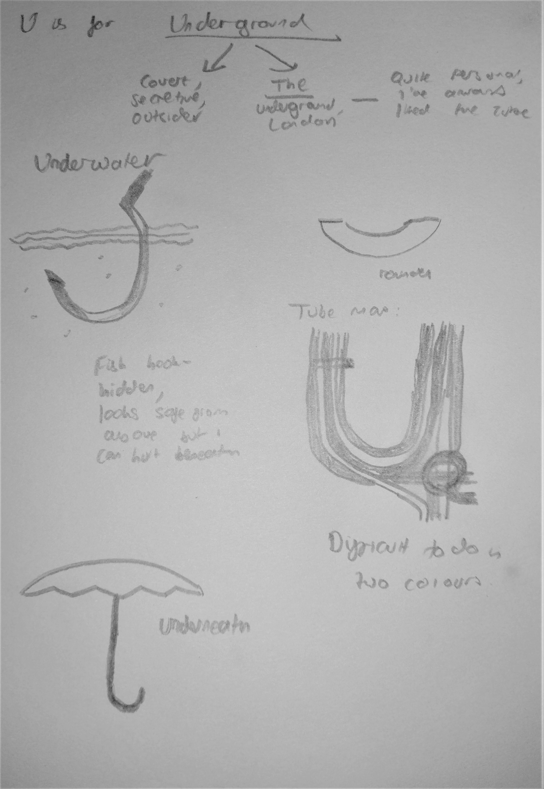

When I was allocated the letter U, I will admit to being a bit stumped. I couldn't really
think of many words beginning with U - and certainly not many places.
The first proper idea I had came during the lecture. During my found alphabet project I'd found
a new love for looking at architecture in different ways. I was especially enamoured with the
stained glass I'd come across in the John Rylands Library.

I thought about the ways I could make this work on the page - perhaps a gold colour for the
frames, and then transparent or grey or blue for the panes? However I think this would be
difficult to square with the "two colours" requirement of the brief, as stained glass is usually
known for its huge range of colours depicting various scenes. Furthermore, I don't have any
particular personal connection to or link with stained glass; I'm not religious, I don't go to
church, there isn't really a good story behind my choice of letter.
In the lecture, I had a quick glimpse of the U produced for the Letterspace project. I thought
it looked very
interesting.
RESEARCH BREAK

U from the Letterspace Project
Alcock is a former MSoA student who based his design for the Letterspace project on
Whitworth Park.
Out of all the Letterspace submissions, this is perhaps one of the simplest but also one
of my
favourites. It's definitely one of the most intriguing and interesting designs.
The story behind it is the ironwork on the fences of Whitworth Park, and the archway
which forms the
shape of the U. Regrettably, this has had to be upside down in this letter for obvious
practical
reasons.
The colours are nice, with the cream background and the different thicknesses of black
print over the
top. It reminds me of old architectural drawings and plans, which links to the theme
quite well.
In the studio session afterwards, we went through a few other letters and I drew out some ideas
I had for those. And whilst those are obviously not applicable for my U, they encouraged
me to think a bit less literally and to broaden my horizons.

I also drew out a few more Us. I thought about the basic constructions of the letter - a
circular bottom, extended in one direction by a rectangle. I thought of this idea, which looks a
bit like a venn diagram.

RESEARCH BREAK

Architectural Alphabet
Steingruber was an architect and illustrator in 18th century Germany.
In the series Architectural Alphabet, he created imaginary palaces where the floorplans
made letters of
the alphabet. He then accompanied these with impressions of how a palace with such a
layout could look.
They are delightful in how they protray some of the eccentricities of the way we write
letters.
There is an element of humour to the drawings; buildings would not naturally take the
shapes of the
letterforms he has drawn, therefore some of the palaces he has drawn have their own
little quirks.
I think the idea is very advanced for its time, it has a playfulness that I'm not sure
would've been
expected at that time. My favourite letterform has to be the N, which is such a
beautiful and
unconventional shape and yet makes an elegant palace.
I was struggling for ideas. I thought about more ways to draw a U, with serifs pointing
different ways. But none of these really made a good letterform, and lacked any sort of story or
personal connection.

RESEARCH BREAK

Blackdora Typographic Kit
Huang has taken three typefaces of differing styles and distilled them down to the basic
parts that make
up each letter. She has then produced physical pieces that fit together to allow people
to make new
letterforms using bits of other fonts.
I think it's a great idea. It looks like something I'd love to have a play about with.
The playfulness
is inherent in the design; encouraging the mixing of different sorts of fonts to create
new letters.
It is an educational item as well: Huang produced it as part of a MA degree, and it
helps to teach
people about the history of typography through the three fonts it blends - Blackletter,
Bodoni, and
Futura.
I love the physicality, the tangibility of it. We see typefaces everywhere, on screens,
in print.
Huang's work helps to explore how the letters we recognise are made up of different
pieces that can be
combined in new ways.
In my tutor group, we had a discussion about what other ideas I could have. Their suggestions
included: underwater, understanding, underground, and umbrella. I
also thought about just presenting a mirror as my final piece, and saying that it represents
"you". I sketched out a few of these, seeing
where I could take them.

They were all OK ideas, but none of them really had any sort of special meaning or personal
connection to me.
RESEARCH BREAK


90° Typography Book
Przybyla has threaded cotton through pages of a book to create a unique typographical
experiment. Each
letter is contained between two perpendicular pages; opening and closing them reveals
the letter from
different angles.
I really like it, what a brilliant idea. I'm in awe of how much planning and
experimentation needed to
be done, trying to get all the angles right so that it would look good at different
stages. It's almost
like an optical illusion, different ways of seeing the same threads as differing forms
depending on the
way you look at it and how far the pages are open.
The letters themselves are very nice, the technical constraints of needing certain
angles and verticals
means that the font looks almost Blackletter in places, which is a very nice effect.
The colour scheme is great too, using the two colours of thread makes it look like a
ribbon has been
twisted and two sides are showing, in light and in shade.
I then thought more about the letter U, and what it can refer to. I thought about the
phrase 'u-turn'; it's usually seen as a bad thing, an admission of failure. In politics, it's
the phrase used when a politician realises a policy is unpopular and backtracks. On a road, a
u-turn is recognising that the direction you were heading in was the wrong one.
This metaphor characterises such a movement as a negative one - I'm not sure I entirely agree.
There are two parts to every u-turn: the beginning, and the ending. But the ending is where it
remains afterwards, going off in the other direction. Accepting failure, yes. But turning round
and making it right again - that's more important, I believe.
I considered some of the U-turns I have been on in life. Perhaps the biggest is coming to
university; a School of Art no less. But I'm not the sort of person who's always liked 'art',
not at school, not particularly much out of school either.